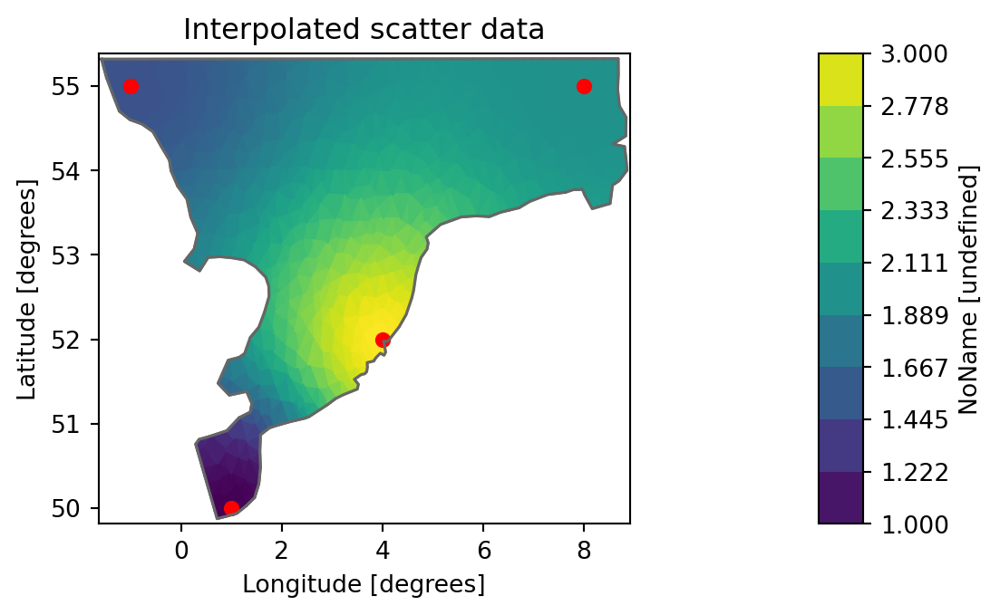

import mikeioDfsu - 2D interpolation
Interpolate dfsu data to a grid, save as dfs2 and geotiff. Interpolate dfsu data to another mesh.
ds = mikeio.read("../../data/wind_north_sea.dfsu", items="Wind speed")
ds<mikeio.Dataset>
dims: (time:6, element:958)
time: 2017-10-27 00:00:00 - 2017-10-27 05:00:00 (6 records)
geometry: Dfsu2D (958 elements, 570 nodes)
items:
0: Wind speed <Wind speed> (meter per sec)da = ds.Wind_speed
da.plot();
Interpolate to grid
- Get an overset grid covering the domain
- Then interpolate all data to the new grid and plot.
- The interpolated data is then saved to a dfs2 file.
g = da.geometry.get_overset_grid(dx=0.1)
g<mikeio.Grid2D>
x: [-1.563, -1.463, ..., 8.837] (nx=105, dx=0.1)
y: [49.9, 50, ..., 55.3] (ny=55, dy=0.1)
projection: LONG/LATda_grid = da.interp_like(g)
da_grid<mikeio.DataArray>
name: Wind speed
dims: (time:6, y:55, x:105)
time: 2017-10-27 00:00:00 - 2017-10-27 05:00:00 (6 records)
geometry: Grid2D (ny=55, nx=105)da_grid.plot();Save to dfs2 file
da_grid.to_dfs("wind_north_sea_interpolated.dfs2")Save to NetCDF
xr_da = da_grid.to_xarray()
xr_da.to_netcdf("wind_north_sea_interpolated.nc")Save to GeoTiff
Note
This section requires the rasterio package.
import numpy as np
import rasterio
from rasterio.transform import from_origin
# Dcoumentation https://rasterio.readthedocs.io/en/latest/index.html
with rasterio.open(
fp='wind.tif',
mode='w',
driver='GTiff',
height=g.ny,
width=g.nx,
count=1,
dtype=da.dtype,
crs='+proj=latlong', # adjust accordingly for projected coordinate systems
transform=from_origin(g.bbox.left, g.bbox.top, g.dx, g.dy)
) as dst:
dst.write(np.flipud(da_grid[0].to_numpy()), 1) # first time_stepInterpolate to other mesh
Interpolate the data from this coarse mesh onto a finer resolution mesh
msh = mikeio.Mesh("../../data/north_sea_2.mesh")
msh<Mesh>
number of nodes: 1296
number of elements: 2259
projection: LONG/LATdsi = da.interp_like(msh)
dsi<mikeio.DataArray>
name: Wind speed
dims: (time:6, element:2259)
time: 2017-10-27 00:00:00 - 2017-10-27 05:00:00 (6 records)
geometry: Dfsu2D (2259 elements, 1296 nodes)da[0].plot(figsize=(9,7), show_mesh=True);dsi[0].plot(figsize=(9,7), show_mesh=True);Note: 3 of the new elements are outside the original mesh and data are therefore NaN by default
nan_elements = np.where(np.isnan(dsi[0].to_numpy()))[0]
nan_elementsarray([ 249, 451, 1546])da.geometry.contains(msh.element_coordinates[nan_elements,:2])array([False, False, False])We can force extrapolation to avoid the NaN values
dat_interp = da.interp_like(msh, extrapolate=True)n_nan_elements = np.sum(np.isnan(dat_interp.values))
n_nan_elementsnp.int64(0)Interpolate scatter data to mesh
We want to interpolate scatter data onto an existing mesh and create a new dfsu with the interpolated data.
This uses lower level private utility methods not part of the public API.
from mikeio.spatial._distance import dist_in_meters
from mikeio._interpolation import get_idw_interpolantdfs = mikeio.open("../../data/wind_north_sea.dfsu")dfs.geometry.plot.mesh();# scatter data: x,y,value for 4 points
scatter= np.array([[1,50,1], [4, 52, 3], [8, 55, 2], [-1, 55, 1.5]])
scatterarray([[ 1. , 50. , 1. ],
[ 4. , 52. , 3. ],
[ 8. , 55. , 2. ],
[-1. , 55. , 1.5]])Let’s first try the approx for a single element:
- calc distance to all interpolation points
- calc IDW interpolatant weights
- Interpolate
dist = dist_in_meters(scatter[:,:2], dfs.geometry.element_coordinates[0,:2])
distarray([4.00139539, 3.18881018, 6.58769411, 2.69722991])w = get_idw_interpolant(dist, p=2)
warray([0.19438779, 0.30607974, 0.07171749, 0.42781498])np.dot(scatter[:,2], w) # interpolated value in element 0np.float64(1.8977844597276883)Let’s do the same for all points in the mesh and plot in the end
dati = np.zeros((1, dfs.geometry.n_elements))
for j in range(dfs.geometry.n_elements):
dist = dist_in_meters(scatter[:, :2], dfs.geometry.element_coordinates[j, :2])
w = get_idw_interpolant(dist, p=2)
dati[0, j] = np.dot(scatter[:, 2], w)da = mikeio.DataArray(data=dati, geometry=dfs.geometry, time=dfs.start_time)
da<mikeio.DataArray>
name: NoName
dims: (time:1, element:958)
time: 2017-10-27 00:00:00 (time-invariant)
geometry: Dfsu2D (958 elements, 570 nodes)da.plot(title="Interpolated scatter data");
da.to_dfs("interpolated_scatter.dfsu")Clean up
import os
os.remove("wind_north_sea_interpolated.dfs2")
os.remove("wind_north_sea_interpolated.nc")
os.remove("wind.tif")
os.remove("interpolated_scatter.dfsu")